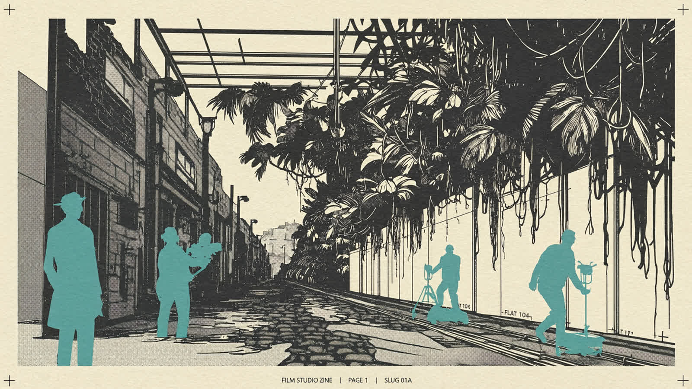
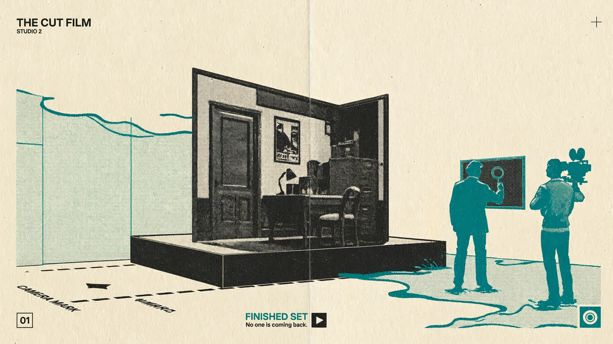
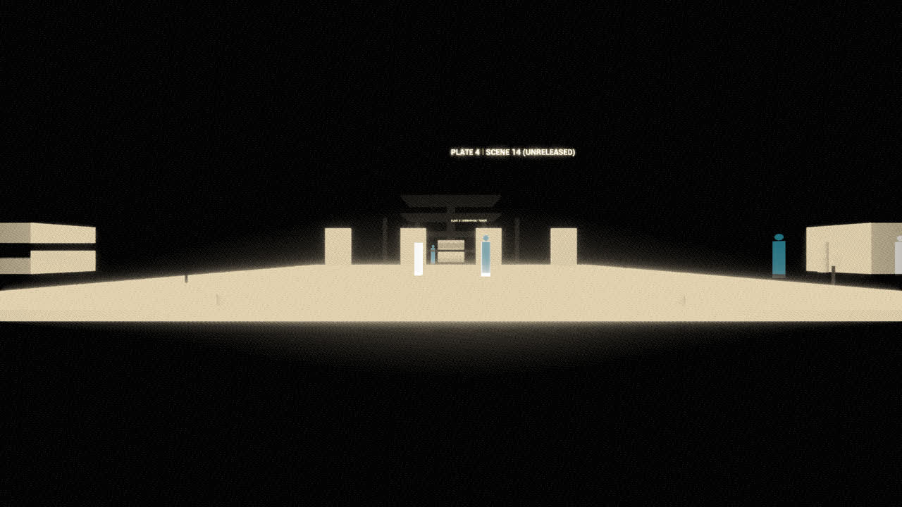
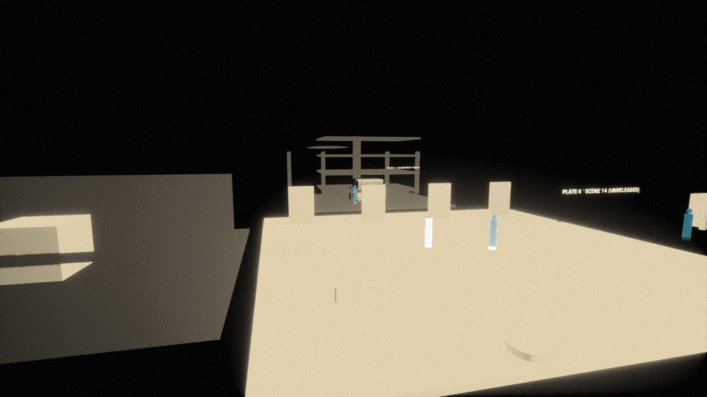

2026 Epic AI MegaJam · theme: director's cut · solo entry
GREENLIGHT the dev log
Four days, one human, three agents, one repo, one rule that only
changes with a test. The game is a studio where machines pitch and one human
decides. The jam ran the same way — this is the trail of what we cut,
what broke, and what it taught.
01The game, in one paragraph
You run the greenlight desk at a studio where the pitches never stop. Four
films cross the belt; the stage holds two. A greenlight is a premiere —
the set rises, the room reacts, and the light on the set is the
10-second clock. A cut makes a ghost: the crew keeps working inside the
surviving films and the trailer. When the belt empties, the edit bay gives you
15 seconds to pull a film off the reel — or the studio pulls the newest
standing one for you. One of the four execs was cut from the org chart. She
still votes, and she speaks last.
02The architecture decision
The desk is the game. Unreal is a client. Every rule — the belt, the
budget, the premiere and bay clocks, ghosts, assembly — lives in pure
TypeScript modules with zero engine imports. A node desk service owns state;
the UE C++ client is an HTTP + JSON reader that renders the slate it is
handed. No rule crosses the wire; the desk's private whisper
field cannot leave the server (tested).
Why: a solo entry on a jam clock cannot afford the C++ compile/cook loop to
be the bottleneck for game logic. Rules changed dozens of times — each
with a test, verified in seconds on the desk, never waiting on an engine
build. The client is thin on purpose: it mirrors assembly numbers, it
performs the room, it does not decide. The same rules also shipped bundled
inside the packaged game (the Shipping binary spawns its own desk) and
could be re-bundled into the standalone web build that became the jam
presence — same decide, drop,
assemble, tick. No re-implementation anywhere.
03Reversals — the big ones
R1Team scope, corrected within a day
Planned as a team build: "trade craft for Sunday." Corrected the next
morning: there is one human entrant; the builders are agents, filed as
disclosed tooling. Solo Driver stayed claimable, Best Team did not. The
agents are a crew, not team members — and the scoring docs were rewritten
around that.
R2The belt of eight was a management sim
First design: budget 100, belt of 192, keep what you can. Played it and
it read as a spreadsheet. Replaced with four tentpoles, stage holds two, a
yes is a premiere and a no is a ghost that keeps working. The
mechanic became the aesthetic: pulled print plates, teal = work that is
still working. The 8-belt rules were cut, not hidden.
R3Verbs were a menu; verbs are physical
Two green verbs plus dropdowns would have read as a system. Now:
greenlight is a hold on the glass (0.8s or it doesn't send), cut is closing
the stage door, pull is dragging the plate off the reel. Each film performs
for ten seconds before the answer exists. Stakes before the knife.
R4Cinematic realism was the default; we killed it with our own art
Every jam game submits dark rain-soaked noir. The concept stills made the
trap visible, so the look became risograph print: paper #F2EAD8,
ink #191713, one teal #1E7A8C reserved for work.
Three inks; misregistration grows with the ghost count (the print keeps
score); halftone that must not crawl in the trailer. The look was written
as a buildable material contract before a single node was wired.
R5"The world falls off into nowhere"
First streamed-seat playthrough (G3): three film sets as marker cubes
22m apart, no floor, no booth, no introduction, default-gray engine cubes
around mono-riso sets. "Exceptionally bland rather than a rich tapestry."
The human said so from the seat — and the last day was spent on exactly
that: the soundstage shell, the cold open, the premiere rise, the exposure
bracket. The prior cut order was superseded in one sentence: world
cohesion outranks everything except the cook.
R6"Web is on the platform list"
The one that cost the entry its eligibility. We read the platform list,
saw "web," and spent real hours on a standalone browser build. The official
rules say otherwise: UE submissions must be packaged for Windows 10/11,
macOS, Android, or iOS — and "web (experimental)" is specifically the
UE 5.9 MegaJam Preview Wasm export of a Unreal-built game. Linux is
not eligible; a standalone web game is not eligible. The web build still
ships as the jam presence, filed honestly as platform Other.
Lesson: read the rules PDF before building to the platform list.
04Failures — what broke, in order
F1Black frames, three separate causes
Headless captures came back black. (a) Editor-mode
-RenderOffscreen captures have no viewport and World Partition
never streams. (b) DPMS was blanking the X display. (c) A window created
while locked stayed unmapped. Working recipe: -game
-RenderOffscreen + camera via BugItGo +
HighResShot, DPMS off. One script per cause, ~30s a frame.
F2Stale UHT intermediates kill packaging
A Shipping package failed with generated.h not found. The
header cache carried a different FID than the sources. Fix: delete the
project's UHT directory, rebuild; compiled objects persist so the retry
resumes incrementally. Rule since: after any header churn, clear the UHT
dir before packaging.
F3The staged desk went stale
The packaged game spawns its desk from ue/services/, not the
repo's services/. That snapshot predated the premiere-clock
work, so the 10-second clock silently never ran in-game — no error
anywhere, the client just polled a service with no clock. Refresh the
staged copy before every cook. The failure that most looks like a design
problem when it is a packaging one.
F4The teal chase (five rounds)
The game's signature — teal crews still working in cut films — rendered
zero teal pixels in every capture. Five diagnosis rounds, each
narrowing: material constant? (read-back verified correct). Saturation
mask math? (still zero). Custom-depth stencil fallback? (actor properties
verified set — by probing to a file, because unreal.log
doesn't reach the log file under the python commandlet). Stencil buffer
population? (still zero in headless). The root cause, found when nothing
was left to blame:
Every capture was taken seconds after boot, before
async shader compilation finished. Cold shaders — which is why a gain
sweep "did nothing" (byte-identical frames). Worse, every capture run left
its editor process alive forever (-game never exits), so eight
zombie editors fought for the GPU and older ones overwrote the "latest"
frame. Fix: warm a throwaway capture ~150s, kill the editor pid,
then capture. Zero teal pixels → 37,000. The five rounds weren't
wasted: they proved every actor-side property correct and isolated the
failure to the render pipeline, where the truth lived.
F5HighResShot does not composite UMG
In -game -RenderOffscreen, "end card" shots never actually
contained the end card, and no HUD is verifiable that way. Both render for
real viewport players. Consequence: anything UMG is verified by code path +
the streamed seat, never by the headless frame. A capture pipeline lying
about its own output is worse than no capture pipeline.
F6Python headless is flakier than it looks
-ExecutePythonScript and -ExecCmds="py
<file>" produce no output on this build. The reliable path is
the pythonscript commandlet — which has its own silent trap:
it does not set __name__ == "__main__", so a script guarded
that way skips main()entirely. Several
"the script ran, nothing happened" runs explained. Also:
Display-severity log lines don't reach -stdout; the truth is
in the project log file.
F7World Partition eats your placements
Placed actors live in __ExternalActors__/**, not the
.umap. The first push of a placement missed that tree and the
actor silently vanished for every other checkout. Commit the whole
tree or the placement is a ghost — fittingly, this game is full of them.
F8Static mobility, silent slam
A runtime-rotated prop "silently failed behind a PIE mobility warning":
a Static StaticMeshActor placed at runtime cannot rotate. The clapper's
punch was dead for a full cycle until the placement script set
MOVABLE. Rule: if a runtime move looks dead in a capture, grep
the log for "Mobility of" first.
F9pkill -f matched the ssh session
The kill pattern appeared later in the same remote command line, so the
cleanup killed its own session mid-command. A pgrep watcher
with the same problem made a dead build read as "STILL BUILDING." Rule:
character-class the pattern and keep the literal target string out of the
rest of the command line.
F10The MCP "fatal dialog" was never the plugin
Enabling Epic's MCP plugin killed every headless editor pass with a
fatal "module not found." We removed it from the committed uproject (safe).
The real root cause: the engine had been rebuilt, so every prebuilt plugin
manifest carried an out-of-date BuildId — a skipped dependency reads as
"module not found." Rebuilding the editor target with the project in the
graph compiled the modules fresh, and then the full MCP path worked:
initialize → tools → create a skill in the running editor over JSON-RPC →
read it back verbatim. The render bot is a member of the crew. Gotcha: the
+-joined single-arg -EnablePlugins form is fatal
in PluginManager.cpp.
F11Material graph connects silently lie
The UE-python MaterialEditingLibrary.connect_* returns a
bool and never raises: bad pin names "succeeded." Single-input nodes report
pin "None"; Saturate/Clamp refuse
python connects (worked around with Min+Max).
Type-strict lerps on float4 scene textures meant hand-padded
vectors. And the build's connect signature is
(from_expression, from_output_name, property_) — the
"obvious" arg order produced unconnected (black) materials with zero
errors. Every connect now reads its return value and falls back to a
name dump.
F12The freeze-semantics lie was in the copy
The lapse drill showed freezeBay only pulls films while the
picture is over budget. A clean slate freezes as a window closing —
no pull, no dead lights. The room's banner claimed theft either way.
Fixed: THE CLOCK IS DEAD when nothing was pulled,
THE STUDIO PULLED — <title> when it was.
F13MSVC exit 87 was our command line, not the box
Every install of Visual Studio Build Tools on the Windows cook box died
with ERROR_INVALID_PARAMETER. After a day of suspecting the
session, the desktop, and the installer: the VS detailed log said
"Option 'noreport' is unknown. Option 'nothankyou' is unknown. Option
'wait' is unknown. Failed to parse the command line arguments." We were
passing bootstrapper-only flags to the WPF installer, and
--add without --productId. The box was fine all
along. Corrected args parse clean and cache 571 MB of components — the
Windows lane's last tooling blocker is gone.
05The process rules that fell out of it
Rules change only with a test and a dated line in the notes. 48 desk tests green at submission.
No visual change closes without a retained frame.
The Mac is a thin client: no Unreal, no cook, no engine downloads.
One package at a time — three concurrent instances starve over desk port 8788.
Stamped-truth pattern: the client renders what the desk decided (last.action, lastLines) rather than re-deriving it — so a slow player hears the studio's cut via a 410 instead of silently voting for the next film.
06What we cut from the project itself
The brief asks for the feature that didn't make it. Ours, honestly:
Take 47 — webcam mocap as the controller. Funniest video, worst pipeline on a clock. Cut at the wall, day 1.
Decomp — pulling props apart with a generative mesh tool. Real mechanic, nobody else has it; also a pile of meshes this machine cannot hold.
Three vignette maps — collapsed into data layers on one backlot.
Faces — "each film has one readable person" became silhouette-first staging; optional, and stayed optional.
The 8-belt management sim — replaced by the four-tentpole stage.
The 5.9 WASM build, Lumen World Cache, Canvas Bridge, MCP toolsets — verified absent from the 5.8 source or multi-day away; all post-jam, as written, not with three hours on the clock.
The eligible platform, on the clock — the honest entry: the game is real, verified, and packaged (Linux Shipping, full autopilot loop); the jam's eligible platforms could not finish in the remaining window. The submission is the playable web build, filed as platform Other, expected to be DQ'd, with the 5.9-web lane queued for continuation.
The long-term product is what the game accumulates, not what it
widens: a persistent org chart where every run leaves names, ghosts that
persist across runs so the studio is never empty, and
runs/*.json as the surface — replayable, devloggable, analytic.
No fifth film, no new verbs.
07Evidence

Trailer collision — the thesis frame (riso, 3 inks)

Ghost read — the cut crew still at its marks

pt-01 · first pitch (Shipping autopilot)

pt-05 · trailer sweep (packaged binary)
Thumbnail census on the final frames (360px): paper 11–48%, black 42–85%,
teal 0.03–0.14%. Ink-heavy by design; the riso reads at thumbnail scale,
which is where the video gets judged. 48/48 desk tests; the desk's public
payload is the test oracle.
08The mirror
MACHINES PITCHED. A HUMAN DECIDED. THE STUDIO AND THE JAM RAN THE SAME WAY.
it is on the end card, in the only color the card allows for anything still working
This line cannot be copied by any other entry, because ours is true:
three agents built the game, one human greenlit every rule change from a
streamed seat, and the game — where machines pitch and one human decides —
is the submission log itself.